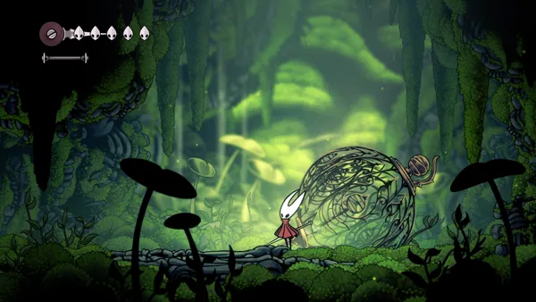

Hollow Knight: Silksong – Megérte a várakozást?
Dátum: 2026.04.13. - Szerző: Mikes Ádám
A Hollow Knight: Silksong az egyik legtöbbet várt indie játék volt az elmúlt években. A Team Cherry fejlesztőcsapat első játéka hatalmas sikert aratott, így a folytatás bejelentése után a rajongók türelmetlenül várták, hogy újra elmerülhessenek ebben a különleges világban. A hosszú fejlesztési idő azonban egyre nagyobb kérdést vetett fel: vajon tényleg megéri ennyit várni egy játékra?

Friss élmény vagy ismerős recept?
A Silksong egyik legnagyobb erőssége, hogy képes megújulni anélkül, hogy elveszítené azt, ami az eredetit naggyá tette. Hornet gyorsabb mozgása és az új harcrendszer dinamikusabb játékmenetet eredményez, ami azonnal érezhető különbséget jelent. A világ továbbra is gazdag és részletes, tele felfedeznivalóval és titkokkal.
Ugyanakkor a játék sok elemében hű marad az elődhöz. Ez egyszerre előny és hátrány: aki az első részt szerette, itt is otthon fogja érezni magát, de azok számára, akik radikális újításokat vártak, talán kevésbé lesz meglepő az élmény.
Hollow Knight: Silksong - Release Trailer
Végső válasz: megérte a várakozást?
A válasz: igen, de elsősorban azoknak, akik értékelték az eredeti játék stílusát és hangulatát. A Hollow Knight: Silksong egy magabiztos, igényesen kidolgozott folytatás, amely nem próbál mindenáron forradalmi lenni, hanem inkább tökéletesíti azt, ami már működött.
A Team Cherry ezzel a játékkal ismét bizonyította, hogy a minőség fontosabb a sietségnél. Bár a hosszú várakozás miatt az elvárások rendkívül magasra emelkedtek, a Silksong így is képes volt erős, emlékezetes élményt nyújtani.
Összességében tehát a várakozás nem volt hiábavaló – még ha nem is mindenki számára ugyanazon okok miatt érte meg.
Forrás
Hollow Knight: Silksong a Steamen, ChatGPT